|
|
É interessante
notar que nós, seres humanos, costumamos elogiar e dar mérito
às pessoas que realizam um trabalho como, por exemplo,
o que estamos realizando neste projeto.
Entretanto, muitas vezes
não conseguimos deixar o posto de espectadores e agir!
Esta atitude pode mudar, basta que você tenha vontade para tal!
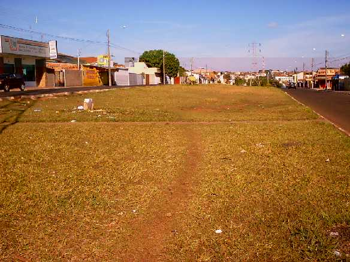 |
Foto tirada
do "Quarteirão F" da Avenida Henrique Gregori, onde ninguém plantou nenhuma
árvore! Repare que ao invés da beleza das árvores,
o que se vê é grama e o lixo
espalhado. |
Se você gosta da natureza e quer mudar a situação de descaso em
que ela se encontra atualmente, mobilize-se,
convide seus amigos para um plantio e
faça como nós: AJA!!!!
Mesmo que
defronte à sua casa não haja um canteiro central,
você pode plantar uma (ou mais)
árvores na calçada.
Os benefícios serão os mesmos
!
Para
isso, mostramos abaixo quais são as árvores que você pode plantar:
|
|
| Não há restrição ao tipo de árvore a ser plantada nestes
locais, portanto, abuse da variedade mesclando árvores nativas, que dão flores e frutos.
Isso irá enriquecer muito o local e torná-lo um mini ecossistema ideal. Todas as
árvores citadas abaixo podem ser plantadas nestes locais. |
|
|
|
|
| 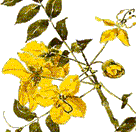 |
Canudo-de-Pito (Senna bicapsularis)
- árvore de médio porte de excelente adaptação e própria para
calçadas, possui uma copa uniforme, com ótima sombra e florada
abundante. |
|
|
| 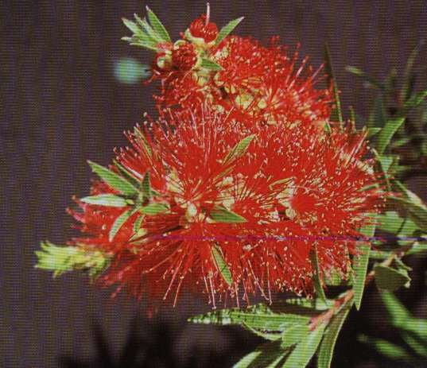 |
Escova-de-Garrafa (Callistemon viminalis)
- árvore de médio porte também muito apropriada para plantios em
calçadas por não possuir raízes fortes (que quebram as calçadas) e
com uma copa uniforme e florada abundante. Proporciona uma florada que
atrai muitos beija-flores pois suas flores são próprias para a
alimentação dos mesmos, e uma ótima sombra. |
|
|
| 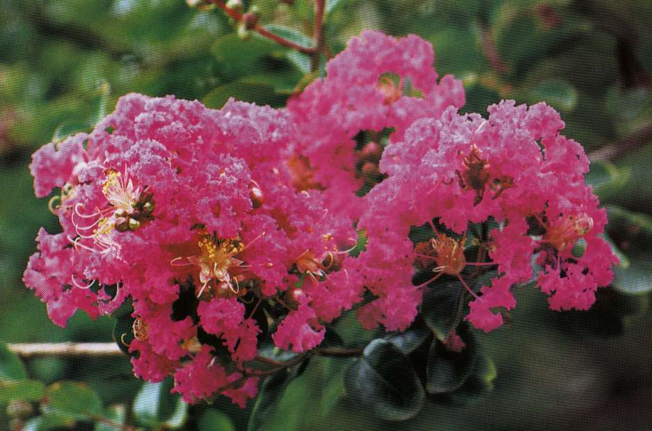 |
Resedá (Lagerstroemia indica)
- mais uma árvore de médio porte muito indicada para o plantio em
calçadas, devido à sua característica paisagística (com uma
florada farta e muito bonita) possui ótima sombra e também não
quebra a calçada. |
|
|
| 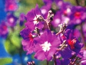 |
Quaresmeira (Tibouchina granulosa)
- árvore de pequeno a médio porte, de grande beleza quando
apresenta suas flores roxas, e por isso muito utilizada em plantios em
calçadas. Possui uma copa uniforme e boa sombra. |
|
|
| 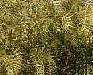 |
Chorão Mexicano (Salix) - conhecido
pela sua característica de folhas caídas (que lembram lágrimas de choro). Dão ótima
sombra e, nos períodos de floração, um perfume sutil e agradável. Possuem raízes
fortes, portanto necessitam de cuidados extras; acesse o link "Como
Plantar" e fique por dentro dos cuidados extras. |
|
|
| 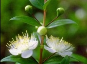 |
Murta (Syzygium
jambolana) -
conhecida pela sua uniformidade e por ser uma árvore de copa fechada, proporciona uma
ótima sombra e atrai pássaros pois possui um pequeno fruto avermelhado. Podem ser
plantadas naturalmente, sem a necessidade de cuidados extras. |
|
|
| 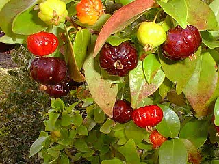 |
Pitanga
(Eugenia uniflora)
- árvore de crescimento lento,
que proporciona flores e frutos muito apreciados por insetos polinizadores, aves e pelo
homem. Possui uma ótima aparência e uma copa fechada proporcionando
ótima sombra. |
|
|
| 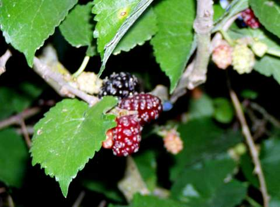 |
Amora
(Morus nigra L) -
árvore de porte médio, que proporciona uma grande quantidade de frutos de cor
roxa, apreciados por pássaros e pelo homem.
Proporciona ótima sombra. |
|
|
| 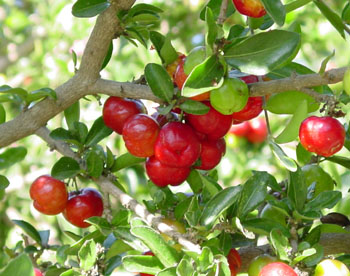 |
Acerola (Malpighia
glabra) - conhecida pelos seus frutos que contém uma alta taxa de
vitamina C, de pequeno porte, muito ultilizada também em jardins e
quintais, possui uma copa uniforme porém não tão fechada. É muito
apreciada pelos pássaros. |
|
|
| 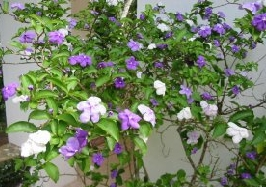 |
Manacá Cheiroso (Brunfelsia grandiflora) - árvore de pequeno porte, cujas características
principais são: crescimento lento, com suas flores azuis que posteriormente se tornam
brancas e muito perfumadas. Possui uma ótima aparência para ornamentação. |
|
|
| 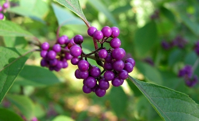 |
Calicarpa
(Caliicarpa reeversii ou Calicarpa
roxa) -
árvore de porte medio com excelente floração e
frutificação. Muito apreciada pelos pássaros. |
|
|
| 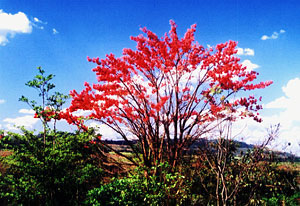 |
Mulungu
(Erytrina sp) - árvore
de porte médio, também chamado de mulungu da serra, possui floração vermelha apreciada
principalmente por beija-flores e nectarinas em geral. |
|
|
|
Saguaraji-amarelo
(Rhamnidium elaeocarpus) - árvore de porte grande (10 a 13 metros) largamente apreciada pelos
pássaros. Existe também o Saguaraji-vermelho que não é tão generoso com os frutos,
mas é de crescimento relativamente
rápido,
além de ser também muito disputado pelos
pássaros. |
|
|
| 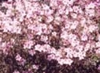 |
Magnólia branca
(Michaelia grandiflora) - árvore de grande porte, na qual existe também a Magnólia
amarela, maior e também menos generosa. Uma das principais características desta
espécie é que ela é o principal motivo pelo qual o
pássaro migratório chamado Say
andorinha, em sua rota para o Canadá, passa por São Carlos, mas todos os frugivoros
(Sabiás, Sanhaços, Bem-te-vís, etc) apreciam muito os seus frutos. |
Estes são apenas alguns exemplos de árvores que podem ser plantadas.
Para mais informações,
procure o Horto Municipal de sua cidade
ou um viveiro
especializado.
Veja no
link "Como Plantar?" quais são os procedimentos
que você deve tomar ao plantar uma
árvore, e quais acessórios utilizar.
Se você deseja juntar-se a
nós, auxiliando nos plantios periódicos que fazemos,
envie um E-mail para planteavida@yahoo.com.br
que ficaremos muito felizes
em ter a sua participação em nosso projeto!
Continue acessando os
links ao lado para conhecer mais sobre o projeto. |